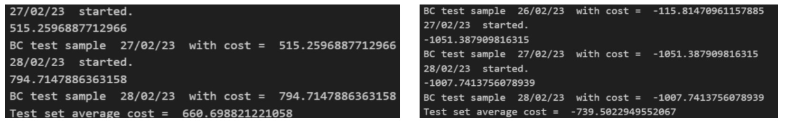

A Microgrid Approach to Energy Cost and Emission Reduction for Sustainable Port Operations
Institution: Newcastle University & Singapore Institute of Technology
In collaboration with: Power Automation Pte Ltd & NUS (National University of Singapore)
Supervisor: Dr. Tan Kuan Tak
Tools & Techniques: Python, MILP, Hierarchical Optimization, ESS, Solar PV, HOMER
This project developed a Python-based energy management system for Jurong Port to reduce operational costs and carbon emissions through a microgrid architecture. A hierarchical MILP algorithm managed grid interaction, energy storage, and load shedding, integrating real-world solar PV data.
Key Contributions
- Developed and validated a multi-layer MILP optimization algorithm
- Achieved up to 60% grid independence via solar integration
- Realized cost savings exceeding $15,000 using ESS
- Benchmarked results against HOMER software and peer models
- Exposed scheduling-performance gaps between offline and online MPC control
Methodology
The MILP formulation minimized total energy cost over a 24-hour scheduling horizon. The objective function was:
Minimize: ∑t (Cgrid(t) · Pgrid(t) + Cch · Pch(t) + Cdis · Pdis(t))
Subject to constraints:
- Power balance: Pload(t) = Pgrid(t) + Pdis(t) - Pch(t) - PPV(t)
- Battery SOC dynamics: SOC(t+1) = SOC(t) + ηch · Pch(t) - Pdis(t)/ηdis
- System limits: Generation, storage, and grid transaction limits
A hierarchical strategy separated macro-scheduling (daily optimization) from micro-adjustments (short-term response), enhancing computational scalability.
Test Validation
Validation was carried out using real load and solar data to evaluate algorithmic performance under different scenarios.
PV, Load, and Price Inputs


1. Generation Analysis
Increasing PV generation from 300 kWh to 500 kWh significantly improved profit margins by reducing dependence on costly grid imports, confirming the economic benefits of enhanced renewable penetration.
2. Charging/Discharging Cost Optimization

Charging and discharging schedules adapted to the time-varying tariff signals. The optimization effectively shifted loads to low-tariff periods, minimizing overall cost.
3. Energy Storage System (ESS) Contribution

The ESS enabled energy arbitrage and improved load matching, reducing curtailment and generating higher revenues. The SOC schedule supported grid flexibility and reliability.
Poster